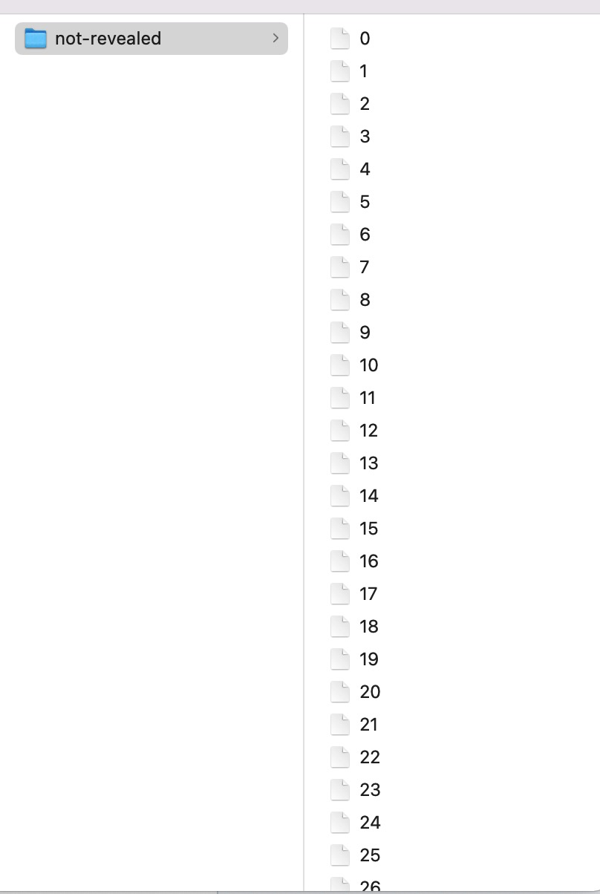
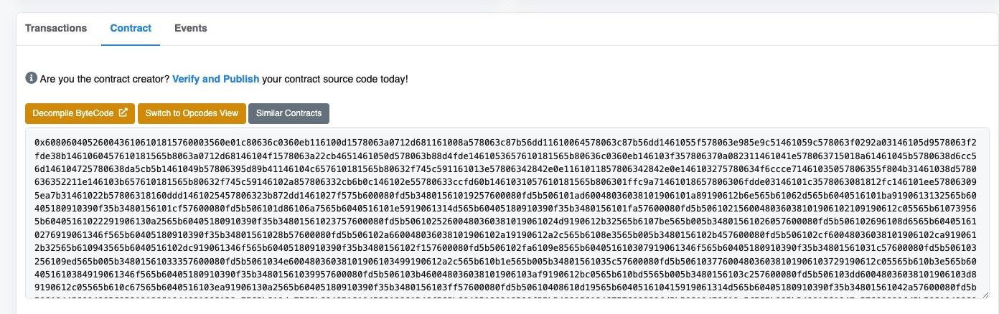
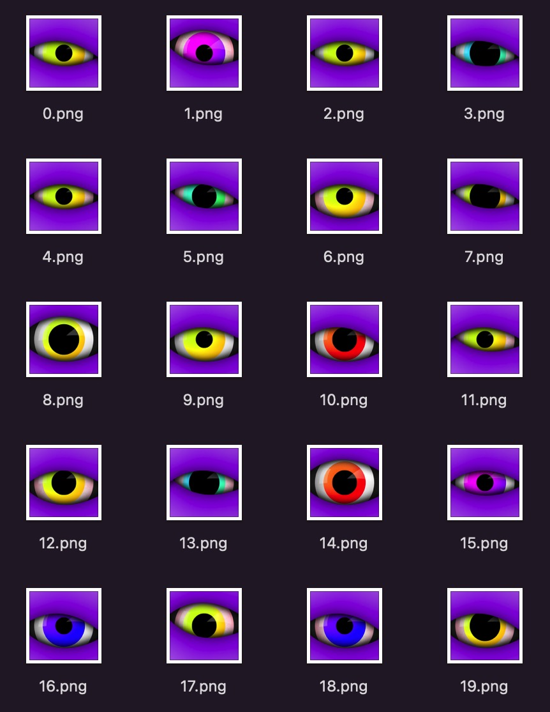

最近参与了很多 NFT 项目的一级市场 mint 以及交易过程，也阅读了很多 NFT 项目的合约代码，自己还没实操过，并且全网也没找到此主题的文章。
此文章边做边写，不一定是最佳实践，但所有环节是本人亲自参与过的，keep your hands dirty, let's go.
此教程所有环节在科学上网环境下进行，有任何网络错误相关问题请检查你的科学上网是否流畅。
1. 生成钱包地址§
部署 NFT 合约的时候需要有一个钱包地址作为合约的 deployer 和 owner，这里使用 Metamask 作为钱包应用。
打开 Metamask 官网 https://metamask.io/，点击 "Download now"，下载 Chrome 插件并安装。
如果有现成的私钥点击 "Import wallet"，如果没有点击 "Create a Wallet"，设置好密码，保管好助记词，助记词保管参考偷不走的助记词
2. 领取以太币§
打开 Rinkeby 的水龙头 https://faucet.rinkeby.io/，按照水龙头的 "How does this work?" 领取 Rinkeby 网络的以太币。
3. 准备盲盒图片和 meta info 文件§
图片尺寸 512x512 px 最佳，上传到 ipfs 上。我这里使用的是 https://www.pinata.cloud/，上传后得到图片 URL https://gateway.pinata.cloud/ipfs/QmQvp2GyrBs5aKkT2UWg4p2cBbF1WDjCYgSBSmzeZzvFvv，文件在 ipfs 上的 cid: QmQvp2GyrBs5aKkT2UWg4p2cBbF1WDjCYgSBSmzeZzvFvv
同时准备 N 个 Json 文件， N = 准备发售的 NFT 个数，格式如下
{
"name": "Veryyoung NFT Demo #0",
"description": "veryyoung nft demo",
"image": "ipfs://QmQvp2GyrBs5aKkT2UWg4p2cBbF1WDjCYgSBSmzeZzvFvv",
"attributes": []
}
名字编号做成自增，description 可以随意写， image 内容填 ipfs://+刚刚准备的文件 cid
我准备了个脚本来自动生成所有盲盒 json 文件，代码见 unreveal.js
执行后效果如下

将 metadata 上传到 ipfs，得到 folder 的 cid：QmPphQMMEhwmXMp3m4sJrtL9xqAX8emiXBZw8UeVGhqZhK
4. 编写合约代码§
代码见 VeryyoungNFTSimpleDemo.sol
这里有几个需要注意的：
- 留了方法 setBaseURI 来修改 baseurl，用来开图。
- 拒绝合约调用，防止使用合约来批量调用（NFT初期很多项目被用合约批量 mint，某数字 DAO 因此一战成名）
- withdraw 方法使用了 call 而不是直接使用 tranfer 函数，防止被恶意利用，具体原因参考 Don't use transfer() or send()
- 敏感方法加上了 onlyOwner 修饰符，仅允许合约拥有者(也就是部署合约的那个地址)进行操作
- 使用 ERC721A 降低 mint 多个的 gas
6. 编写测试§
我在本地 Ganache 跑的测试，有其他网络需求记得修改 hardhart 配置里的 url 和端口
7. 部署合约§
先在本地执行部署
yarn deploy:simple
部署成功会如下提示：
yarn run v1.22.10
$ npx hardhat run scripts/deploy_simple.js
Veryyoung simple NFT demo contract deployed to: 0x5FbDB2315678afecb367f032d93F642f64180aa3
✨ Done in 3.96s.
部署其他网络需要申请 infura，可以理解为一套远端的以太坊节点，提供了标准的 RPC API 供使用，避免开发者自己在本地跑以太坊节点的麻烦。
申请后把 key 放到 .env 的 INFURA_KEY 里。
同时把钱包的助记词放在 .env 的 MNEMONIC 里，一定要注意小心助记词泄露，比如被程序兼听剪切板，比如文件泄露，比如文件随着代码上传到远端。
一切都配置好后执行
yarn deploy:simple
或者
npx hardhat run scripts/deploy_simple.js --network rinkeby
成功后会提示：
yarn run v1.22.10
$ npx hardhat run scripts/deploy_simple.js --network rinkeby
Veryyoung simple NFT demo contract deployed to: 0xF82E39Ce459786cC9AE3602Eed9c288B4FBBE785
✨ Done in 23.47s.
合约部署成功！
8. 开源代码§
打开 etherscan 可以看到部署的合约 https://rinkeby.etherscan.io/address/0xf82e39ce459786cc9ae3602eed9c288b4fbbe785，

代码是未验证的，也就是未开源的。
在 Web3 的世界里（起码 NFT 的世界里），合约代码是必须开源的。
申请个 etherscan 的 api，放在 .env 里面。
执行命令
npx hardhat verify --network rinkeby 0xF82E39Ce459786cC9AE3602Eed9c288B4FBBE785 "Veryyoung NFT Simple Demo" "VNSD" "ipfs://QmPphQMMEhwmXMp3m4sJrtL9xqAX8emiXBZw8UeVGhqZhK/"
请确保 verify 的参数和 deploy 的时候保持一致。
如果 verify 成功，会有如下输出：
Nothing to compile
Compiling 1 file with 0.8.4
Successfully submitted source code for contract
contracts/VeryyoungNFTSimpleDemo.sol:VeryyoungNFTSimpleDemo at 0xF82E39Ce459786cC9AE3602Eed9c288B4FBBE785
for verification on Etherscan. Waiting for verification result...
Successfully verified contract VeryyoungNFTSimpleDemo on Etherscan.
https://rinkeby.etherscan.io/address/0xF82E39Ce459786cC9AE3602Eed9c288B4FBBE785#code
现在再看，合约已经开源了 https://rinkeby.etherscan.io/address/0xf82e39ce459786cc9ae3602eed9c288b4fbbe785#code
9. mint NFT§
打开刚刚的合约地址，点击 "Connect to Web3" 连上小狐狸，点击 "Write Contract"，找到 mint 函数，第一个参数写 0.1（mint 价格），第二个参数写 mint 数量（1-5 之间），Wirte，然后等待执行。
执行成功后返回 tx https://rinkeby.etherscan.io/tx/0x7f29aa3dbccda24a3e1d6ea6b9a7ddffcbd05755f35ec318355e897bd38c93f4，可以看到 NFT 已经铸造成功，并打到了我的钱包地址。
此处用户体验不太适合普通用户进行操作，可以自己开发网页，用 ethers.js 或者 web3.js 这样的组件来连接钱包，图形化的进行 mint 操作。
10. 上架 opensea§
打开 Opensea 测试网 链接，连接钱包登录。
点首页的 "Create"，按要求填信息，注意关联上刚刚的 NFT 项目（会自动读取，选择即可）。
如果想收取版税也可以编辑，"Collect a fee when a user re-sells an item you originally created. This is deducted from the final sale price and paid monthly to a payout address of your choosing."， NFT 发生交易后会自动转对应百分比的版税到设置的地址。
完成后 NFT 已经上架成功啦！
https://testnets.opensea.io/collection/veryyoung-nft-simple-demo
11. 开图§
生成开图后的图片和 meta info，格式和自己做的盲盒一样，但是可以增加属性，可以根据属性存在的百分比出稀有度排名。
我使用了 https://github.com/HashLips/hashlips_art_engine 来合成图片&生成 metadata。

将新的图片和 metadata json 文件上传到 ipfs 之后，得到新的 ipfs 链接 https://gateway.pinata.cloud/ipfs/QmdNhbTrDmDvzQwefiCCUJZ3JGRNvk2nbkAqYLJEtXqChB
CID：QmdNhbTrDmDvzQwefiCCUJZ3JGRNvk2nbkAqYLJEtXqChB
回到之前部署合约的 etherscan 链接，执行 setBaseURI 函数，参数为 ipfs://QmdNhbTrDmDvzQwefiCCUJZ3JGRNvk2nbkAqYLJEtXqChB/
调用成功后 metadata 修改成功了。
由于 opensea 有缓存机制，一定时间后才会刷新到 opensea。
也可在 opensea 上的 item 里面点击 "Refresh Metadata" 触发刷新。
12. 白名单维护，预售和公售§
下一篇会详细写